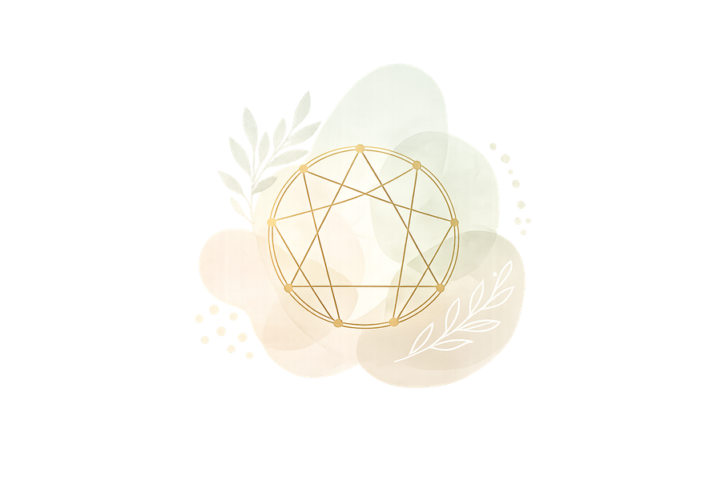

Behandlungsangebot
Enneagramm & Coaching
Warum du so reagierst, wie du reagierst — und welche Wege aus eingefahrenen Mustern herausführen.

Manche Muster begleiten uns ein Leben lang. Wir reagieren in bestimmten Situationen immer wieder gleich — obwohl wir es eigentlich anders wollen. Wir geraten in dieselben Konflikte, treffen ähnliche Entscheidungen, finden uns in vertrauten Sackgassen wieder.
Das Enneagramm ist das tiefgründigste Persönlichkeitsmodell, das ich kenne. Es beschreibt nicht nur, wie wir uns verhalten — es zeigt, warum. Hinter jedem Typ steht eine grundlegende Wunde, eine Schutzstrategie und ein Entwicklungsweg zurück zur eigenen Mitte.
Wer seinen Typ wirklich versteht, beginnt sich selbst mit anderen Augen zu sehen. Nicht als Sammlung von Fehlern oder Stärken — sondern als Mensch mit einer Geschichte, die Sinn ergibt.
Der entscheidende erste Schritt
Die Typbestimmung
Einer der häufigsten Stolpersteine im Umgang mit dem Enneagramm ist die Fehltypisierung. Der Grund liegt in der Natur der Sache: Wir alle haben blinde Flecken gegenüber unserer eigenen Persönlichkeit. Was uns am meisten prägt, sehen wir oft am wenigsten.
Genau deshalb beginnt jede Coaching-Sitzung bei mir mit einer gründlichen, methodisch fundierten Typbestimmung. Ich arbeite dabei mit verschiedenen Verfahren — darunter auch das Enneagramm-Profiling nach David L. Rathmer — und bringe mehr als fünfzehn Jahre praktische Erfahrung mit dem Enneagramm ein. Das Ergebnis ist eine treffsichere Einschätzung, die als Grundlage für alles Weitere dient.
Was das Coaching besonders macht
Weit über klassische Typbeschreibungen hinaus
Mein Ansatz geht weit über klassische Typbeschreibungen hinaus. Ich beziehe alle 27 Subtypen ein, verbinde das Enneagramm mit tiefenpsychologischen und naturheilkundlichen Erkenntnissen und frage immer nach dem Ganzen — nicht nur nach dem Typ.
Eine Coaching-Sitzung bei mir ist kein Test und kein Schema. Es ist ein tiefes Gespräch — über das, was Sie antreibt, was Sie aufhält und was in Ihrem Leben möglich wäre, wenn Sie sich selbst wirklich kennen würden.
- Alle 27 Subtypen des Enneagramms
- Verbindung mit Tiefenpsychologie & Naturheilkunde
- Über 15 Jahre praktische Erfahrung
Sitzungen finden in meiner Praxis in Billerbeck oder per Videotelefon statt.
Welcher Enneagrammtyp sind Sie wirklich?
Möchten Sie herausfinden, welcher Typ Sie wirklich sind — und was das für Ihr Leben bedeutet?